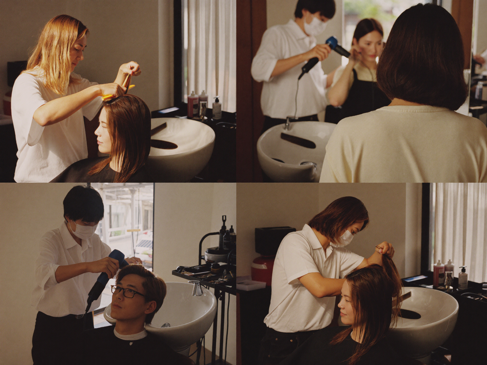

Deine Ausbildung. Dein Weg zum Erfolg.
Der Friseurberuf ist einer von 340 anerkannten Ausbildungsberufen. Die Ausbildung erfolgt dual und dauert 3 Jahre — bei guter Leistung kannst du sie um bis zu ein Jahr verkürzen.
Deine Ausbildung ist vielfältig: Neben Haarschnitt, Coloration und Frisurengestaltung lernst du den professionellen Umgang mit Kunden, die wichtigsten Make-up-Techniken und bekommst einen tieferen Einblick in die Nagelkosmetik.

Was Du mitbringen solltest
Du benötigst keinen bestimmten Schulabschluss, um eine Ausbildung zum Friseur zu machen — ein guter Schulabschluss ist dennoch gerne gesehen.
Wie bewerbe ich mich?
- 01Informiere dich über einen Salon deiner Wahl
- 02Bewirb dich am besten schriftlich und persönlich
- 03Hast du einen positiven Eindruck hinterlassen, wirst du zu einem Vorstellungsgespräch eingeladen
Welchen Abschluss bekomme ich?
Die Ausbildung endet mit der Gesellenprüfung. Nach dem Bestehen erhältst du deinen Gesellenbrief und bist ausgelernt.
Ab jetzt stehen dir viele Türen offen: Qualifiziere dich weiter über Fortbildungen — oder lege deine Meisterprüfung ab.
KARRIEREWEGE ANSEHEN
